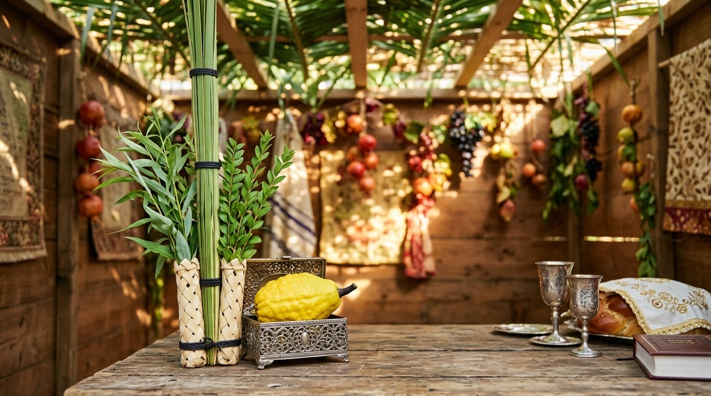

לחץ על כל תמונה כדי לשבץ אותה מיד בהודעה
לוח שילוט חכם • נא להזין קוד גישה
קוד PIN שגוי. אנא נסה שוב.
לוח שילוט חכם ופאנל ניהול ועד בית
הודעות פעילות המוצגות במסך הראשי ובעמודת המידע
טוען הודעות פעילות...
שליטה על בהירות הרקע, חגי ישראל, זמני שבת והתאמה למסך
ביטול אפקטי טשטוש כבדים (Blur) וייעול זיכרון למניעת קריסות במסך בלובי
תמונות מקוריות המאוחסנות ישירות בפרויקט עבור מועדי השנה ויום-יום

ביטול אפקטי טשטוש כבדים (Blur) וייעול זיכרון למניעת קריסות בטאבלטים חלשים
מומלץ להפעיל בטאבלטים ישנים או ב-Webview Kiosk החווים קריסות פתאומיות. הפיך לחלוטין בכל עת.
מעלה באופן הדרגתי את הבהירות והגאמא בצד שמאל של המסך
שליטה מלאה במיקום כל רכיב במסך (שעון, מזג אוויר, זמני שבת, עמודת מודעות ובמה)
הגדרת מספרי טלפון שימושיים המוצגים בפס המהיר ובשקופית הטלפונים
השמעת מוזיקה נעימה או תחנות רדיו ישראליות ברקע (לחיצה כפולה על הלוגו במסך משתיקה)
פרטי הבניין, מקור החדשות ושינוי קוד PIN
הגדר קוד כניסה נפרד למנהל ראשי (כל ההגדרות) וקוד מופשט לחברי ועד (הודעות ורדיו בלבד)
מדריך מפורט לכל נקודות המגע האינטראקטיביות במסך המגע בלובי
איך לבצע פעולות נפוצות במהירות ובקלות
גש ללשונית 📢 הודעות ומודעות ⬅️ לחץ "הודעה חדשה" ⬅️ מלא כותרת, תוכן וכותב. אם ההודעה קריטית (למשל הפסקת מים/הדברה), סמן "⚠️ סמן כהודעה דחופה". ניתן להגדיר תאריך תפוגה להסרה אוטומטית.
בטופס ההודעה, לחץ "בחר קובץ תמונה / פלייר" ובחר תמונה מהטלפון או המחשב. המערכת תציג את ההודעה בעימוד מפוצל יוקרתי (חצי תמונה וחצי טקסט) או בשקופית תמונה מלאה.
גש ללשונית 🎨 תצוגה, רקע וחגים ⬅️ הזז את סליידר "עוצמת ובהירות תמונת הרקע" (מומלץ: 85%) ⬅️ לחץ "שמור הגדרות תצוגה". השינוי מסתנכרן מיידית למסך.
גש ללשונית 📻 מוזיקה ורדיו ⬅️ סמן "הפעל מוזיקת רקע במסך" ⬅️ בחר תחנה (גלגלצ, גלי צה"ל, כאן 88, Chillout Lounge) ⬅️ הגדר שעות פעילות (לדוגמה 08:00 עד 21:00) ⬅️ שמור. המוזיקה תופעל ותיעצר אוטומטית לפי השעות שהוגדרו.